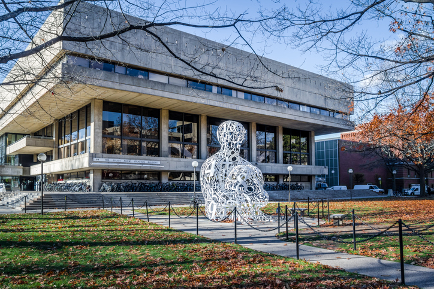
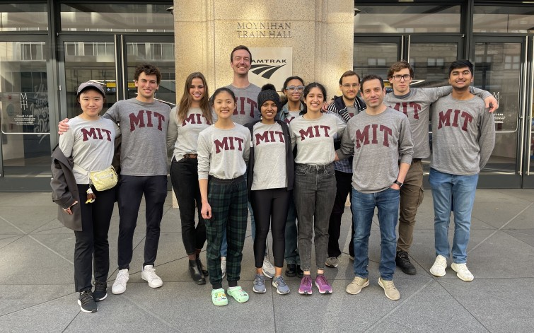

University Overview
Massachusetts Institute of Technology (MIT), founded in 1861, is one of the world’s leading research universities. Located in Cambridge, Massachusetts, MIT is renowned for its focus on science, engineering, technology, and innovation. The university offers a broad range of programs for undergraduate, graduate, and professional students in various disciplines.
MIT’s mission is to advance knowledge and educate students in science, technology, and other areas of scholarship that will best serve the nation and the world in the 21st century.
Academic Programs
Undergraduate Programs
MIT offers a distinctive education that combines a rigorous core curriculum with opportunities for hands-on research and collaboration across various disciplines.
Graduate Programs
MIT provides graduate programs in fields such as engineering, science, business, economics, architecture, and more. The graduate schools include:
- MIT School of Engineering
- MIT Sloan School of Management
- MIT School of Science
- MIT School of Architecture and Planning
- MIT School of Humanities, Arts, and Social Sciences
Online Learning
MIT also offers online programs through MIT OpenCourseWare and MITx, offering access to high-quality educational content on various subjects, including artificial intelligence, data science, and engineering.
Admissions Information
Undergraduate Admissions
MIT is highly selective in its admissions process, evaluating applicants based on academic performance, standardized test scores, extracurricular activities, essays, and interviews.
Application deadlines typically include early action (November 1) and regular decision (January 1). MIT accepts SAT/ACT scores and follows a holistic review process.
Graduate Admissions
Each graduate school at MIT has specific admission requirements, including academic transcripts, standardized test scores, recommendation letters, and a personal statement.
Campus Life
MIT fosters a dynamic and inclusive campus life with a variety of student organizations, cultural activities, and social events.
Clubs and Societies
MIT students participate in diverse clubs such as the MIT Entrepreneurship Club, MIT Robotics Club, and the MIT Outing Club.
Sports and Recreation
MIT offers world-class sports facilities and a range of varsity, club, and recreational sports, including swimming, basketball, and track & field.
Research and Innovation
MIT is at the forefront of research and innovation, conducting groundbreaking work in fields like artificial intelligence, robotics, climate science, and materials engineering. The university is home to numerous research labs and centers, including the MIT Media Lab and the MIT Energy Initiative.
MIT promotes entrepreneurship and innovation, with initiatives such as the MIT Innovation Initiative and the Martin Trust Center for MIT Entrepreneurship supporting startups and projects with global impact.
Contact Us

If you have any questions or need more information about MIT, feel free to get in touch with us:
Email: admissions@mit.edu
Phone: +1 (617) 253-1000
Address: Massachusetts Institute of Technology, Cambridge, MA 02139, USA